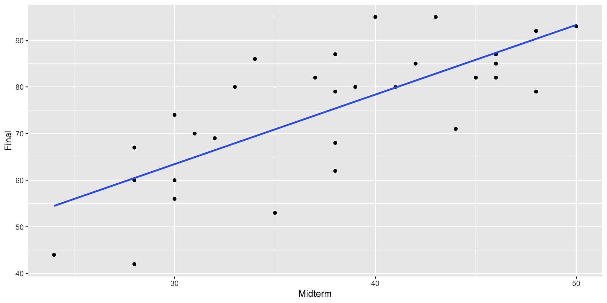
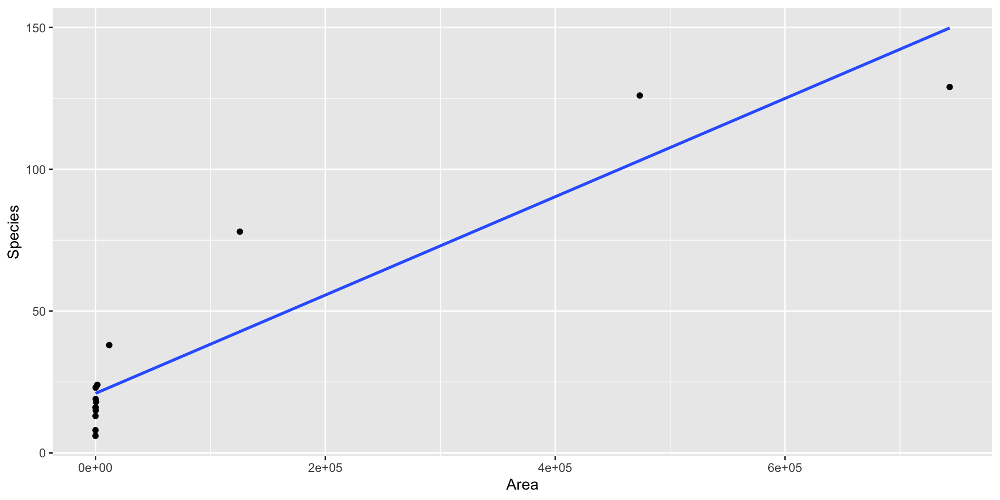
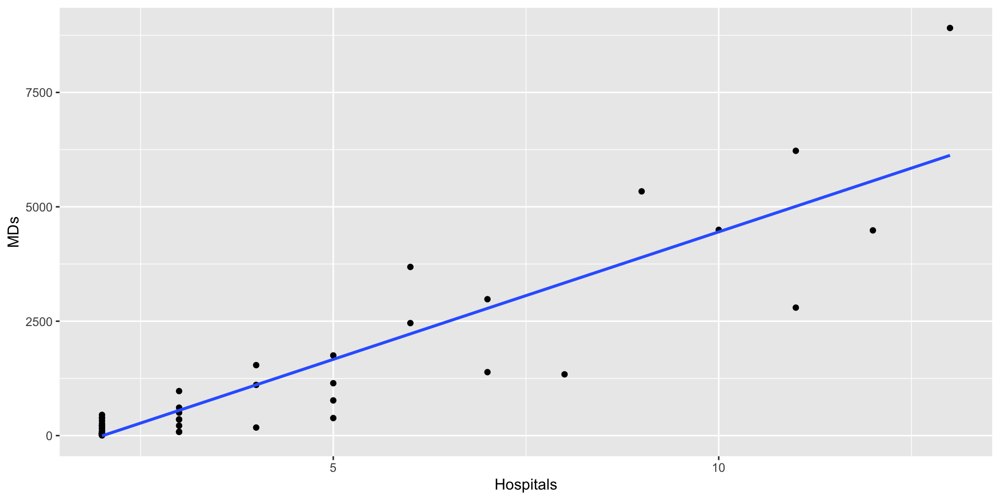
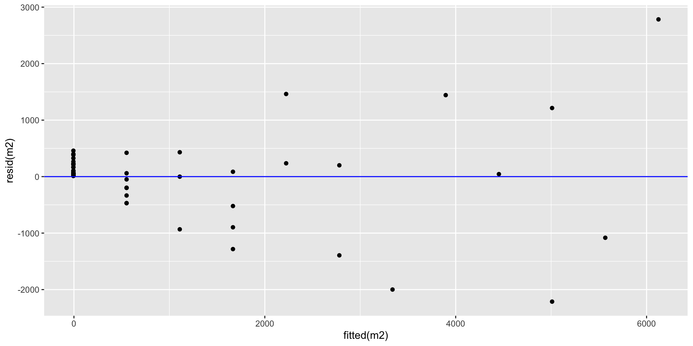
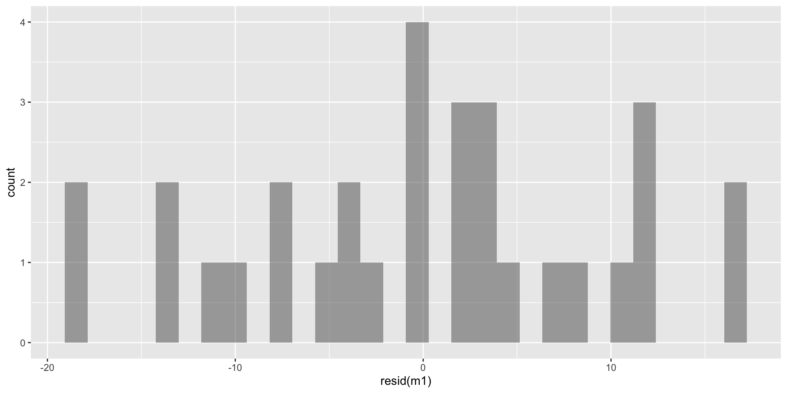
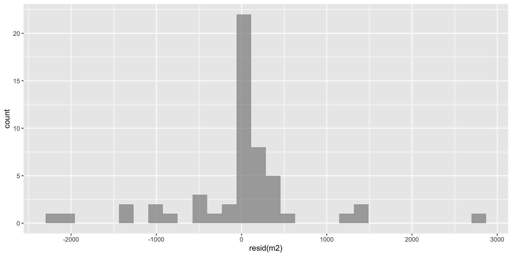
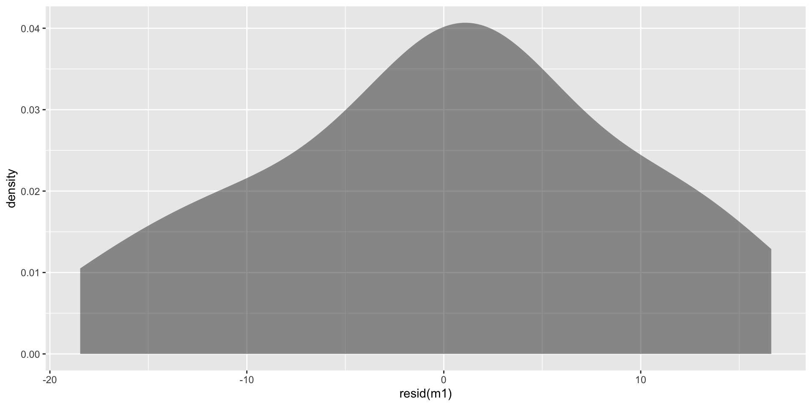
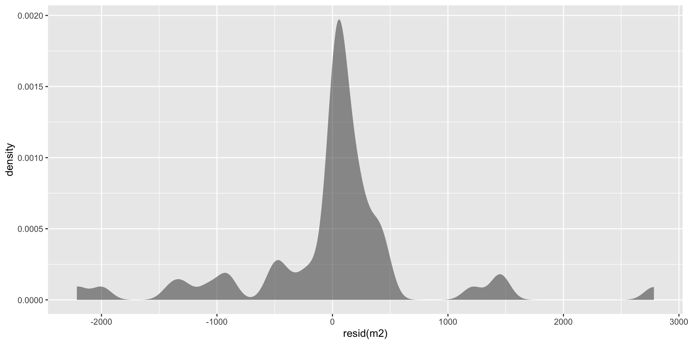
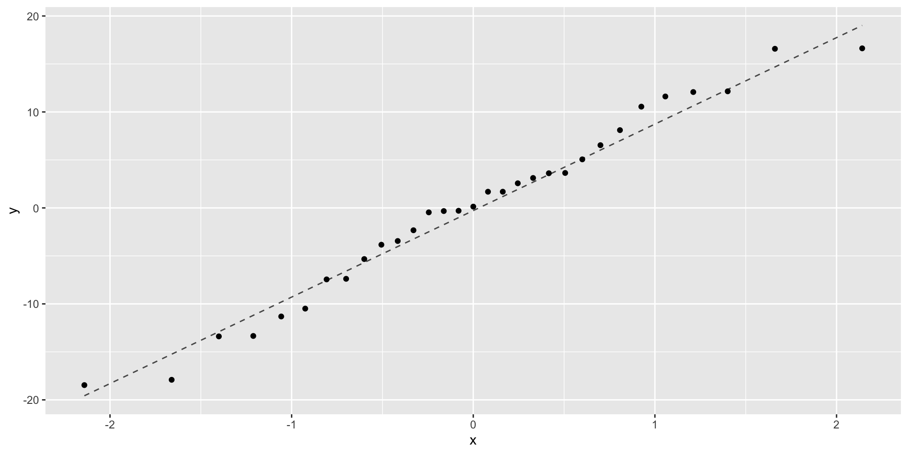
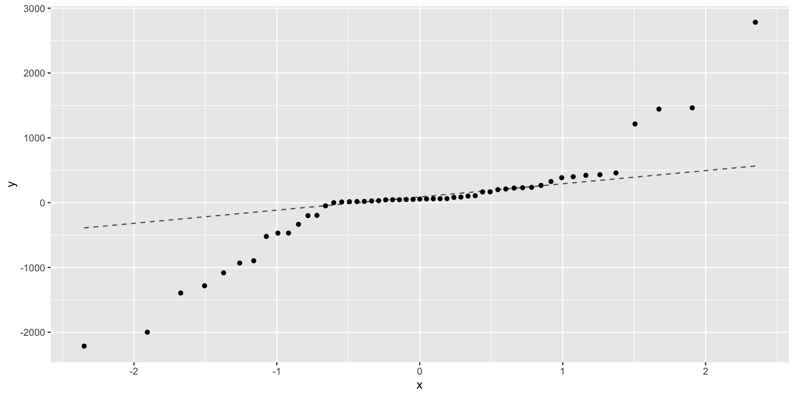

The Simple Linear Regression Model with Conditions
For a quantitative response variable \(Y\) and a single quantitative explanatory variable \(X,\) the simple linear regression model is
\[
Y = \beta_0 + \beta_1 X + \epsilon
\]
where \(\epsilon\) follows a normal distribution, that is, \(\epsilon\sim N(0,\sigma_\epsilon)\) and the errors are independent from one another.
Two Parts
The model
The conditions
The Simple Linear Regression Model Graphically
Conditions: LINC-R
I Mneed a Mnemonic
Linearity: overall relationship is linear.
Independence: errors are assumed to be independent of each other.
Normality: unseen errors \(\epsilon\) are normally distributed.
Needed for confidence intervals and hypothesis tests based on \(t\)-distribution.
Constant variance (Uniform spread) variability of response does not change as the predictor changes.
Randomness - data are obtained using a random process.
Sampling model determines scope of inference
Estimating the Standard Deviation \(\sigma_\epsilon\) of the Error Term
True model errors \(\epsilon\) are unobserved
Estimate unobserved variability in errors \(\sigma_\epsilon\) using observed variability in residuals \(y-\hat y\).
The Standard Error of Regression is the estimated standard deviation of the error term based on the least squares fit to a sample of \(n\) observations:
# Fit and save the regression modelmodel1 <-lm(Final ~ Midterm, data = MidtermFinal)#Obtain regression output including slope and interceptsummary(model1)# Graph regression line on scatterplotgf_point(Final ~ Midterm, data = MidtermFinal, xlab ="Midterm Score", ylab ="Final Score") |>gf_smooth(method ="lm")
Call:
lm(formula = Final ~ Midterm, data = MidtermFinal)
Residuals:
Min 1Q Median 3Q Max
-18.4621 -6.3571 0.1354 5.7992 16.6279
Coefficients:
Estimate Std. Error t value Pr(>|t|)
(Intercept) 18.6721 9.3311 2.001 0.0548 .
Midterm 1.4925 0.2413 6.186 9.58e-07 ***
---
Signif. codes: 0 '***' 0.001 '**' 0.01 '*' 0.05 '.' 0.1 ' ' 1
Residual standard error: 9.651 on 29 degrees of freedom
Multiple R-squared: 0.5689, Adjusted R-squared: 0.554
F-statistic: 38.26 on 1 and 29 DF, p-value: 9.582e-07
# Example 1gf_point(Final ~ Midterm, data = MidtermFinal) %>%gf_smooth(method ="lm")# Example 2gf_point(Species ~ Area, data = SpeciesArea) %>%gf_smooth(method ="lm")


Checking Linearity: 2. Plot Residuals vs Predicted
# Example 1m1 <-lm(Final ~ Midterm, data = MidtermFinal)gf_point(resid(m1) ~fitted(m1)) %>%gf_hline(yintercept =~0, color ="blue")# Example 2m2 <-lm(Species ~ Area, data = SpeciesArea)gf_point(resid(m2) ~fitted(m2)) %>%gf_hline(yintercept =~0, color ="blue")
# Example 1gf_point(Final ~ Midterm, data = MidtermFinal) |>gf_smooth(method ="lm")# Example 2gf_point(MDs ~ Hospitals, data = CountyHealth) |>gf_smooth(method ="lm")

Checking Constant Variance: 2. Plot of Residuals vs Predictions
# Example 1m1 <-lm(Final ~ Midterm, data = MidtermFinal)gf_point(resid(m1) ~fitted(m1)) %>%gf_hline(yintercept =~0, color ="blue")# Example 2m2 <-lm(MDs ~ Hospitals, data = CountyHealth)gf_point(resid(m2) ~fitted(m2)) %>%gf_hline(yintercept =~0, color ="blue")

Checking Normality of Errors: 1. Histogram of \(y -\hat y\)
# Example 1m1 <-lm(Final ~ Midterm, data = MidtermFinal)gf_histogram(~resid(m1))# Example 2m2 <-lm(MDs ~ Hospitals, data = CountyHealth)gf_histogram(~resid(m2))


Checking Normality of Errors: 1’. Density Plot of \(y-\hat y\)
# Example 1m1 <-lm(Final ~ Midterm, data = MidtermFinal)gf_density(~resid(m1))# Example 2m2 <-lm(MDs ~ Hospitals, data = CountyHealth)gf_density(~resid(m2))


Checking Normality of Errors: 2. Normal Quantile Plots of \(y-\hat y\)
# Example 1m1 <-lm(Final ~ Midterm, data = MidtermFinal)gf_qq(~resid(m1)) %>%gf_qqline()# Example 2m2 <-lm(MDs ~ Hospitals, data = CountyHealth)gf_qq(~resid(m2)) %>%gf_qqline()


Checking Randomness and Independence
Typically cannot be checked by inspection of the data
Independence violations
Time series data
Multiple observations from the same family, school, classroom, \(\ldots\)